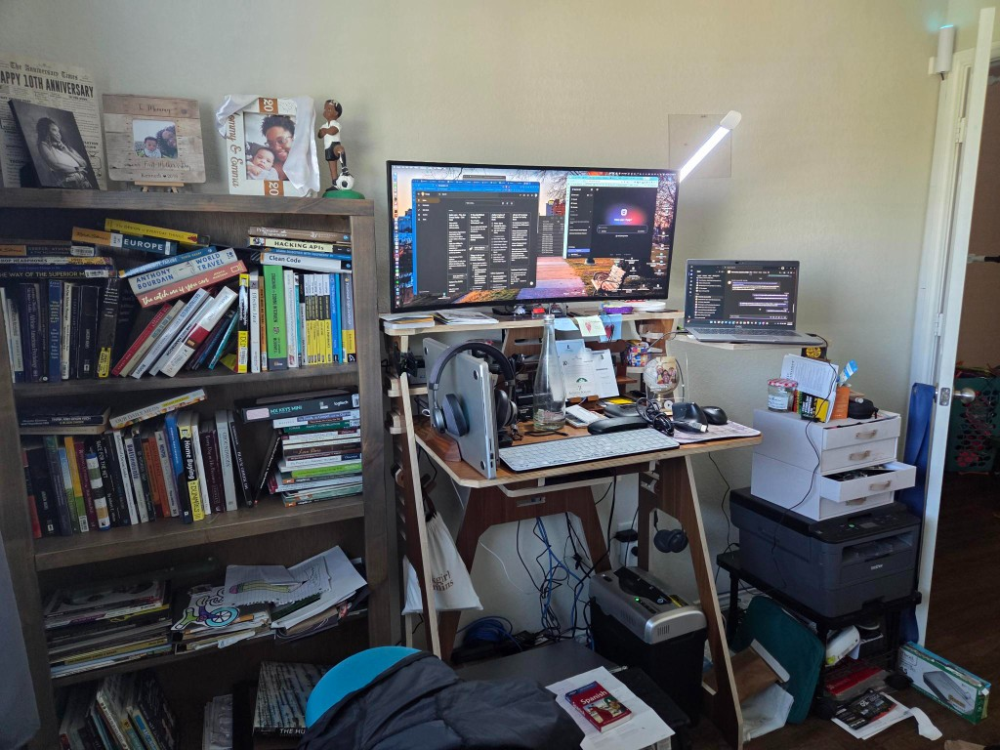
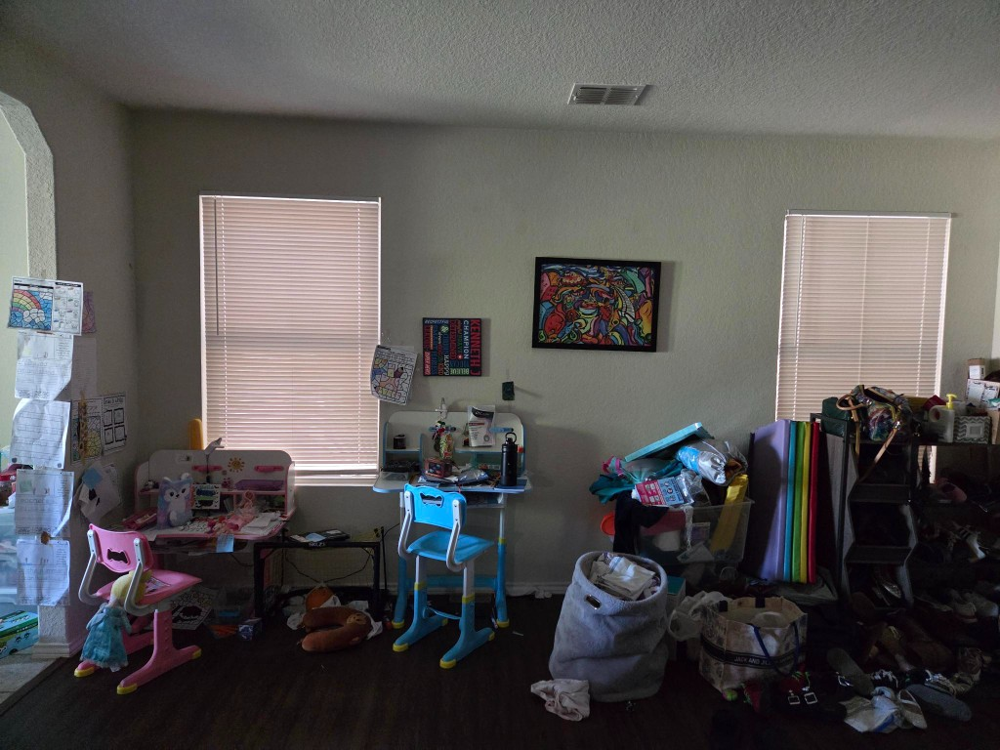
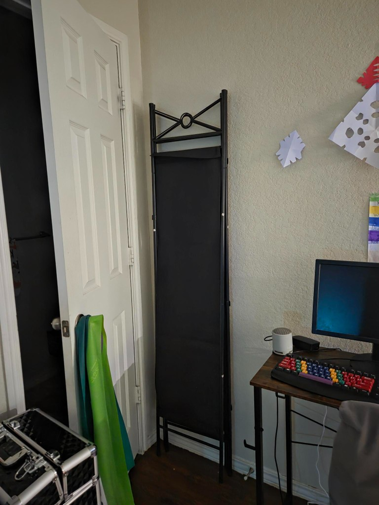
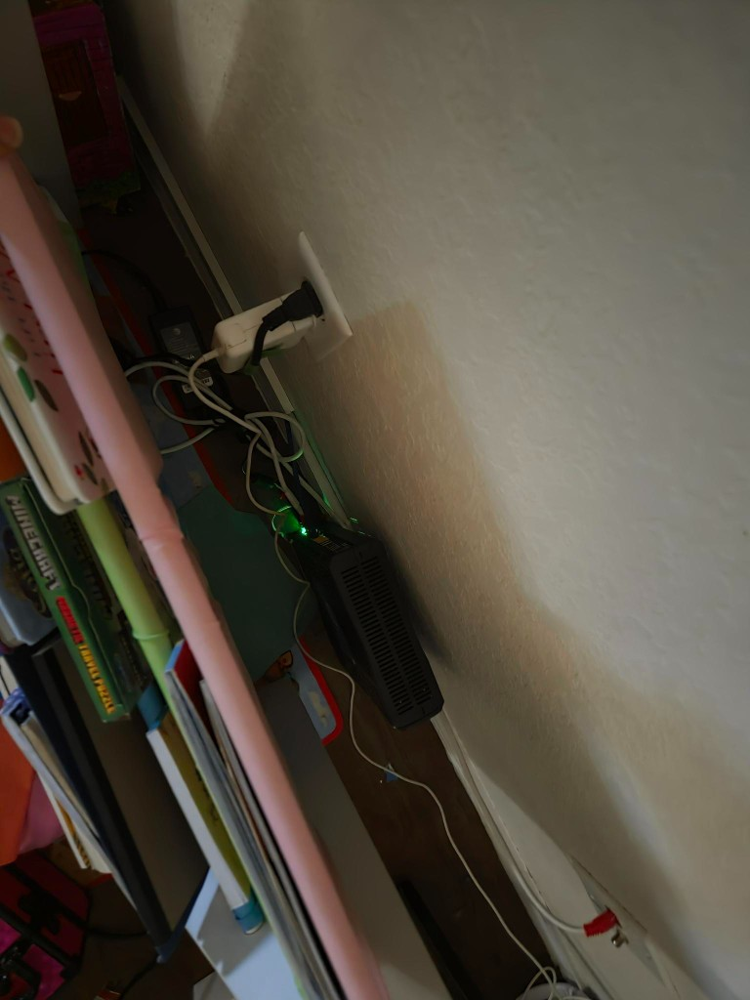
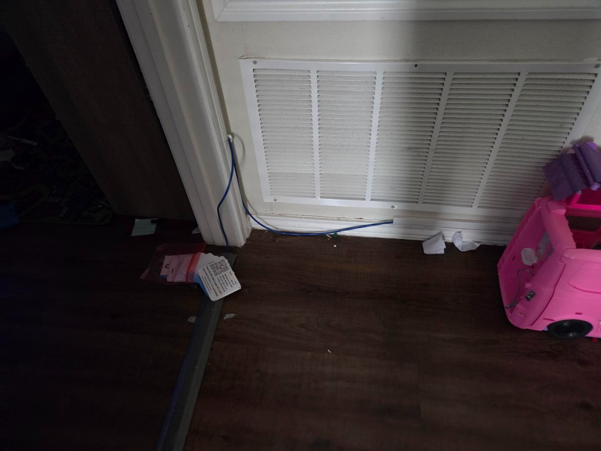
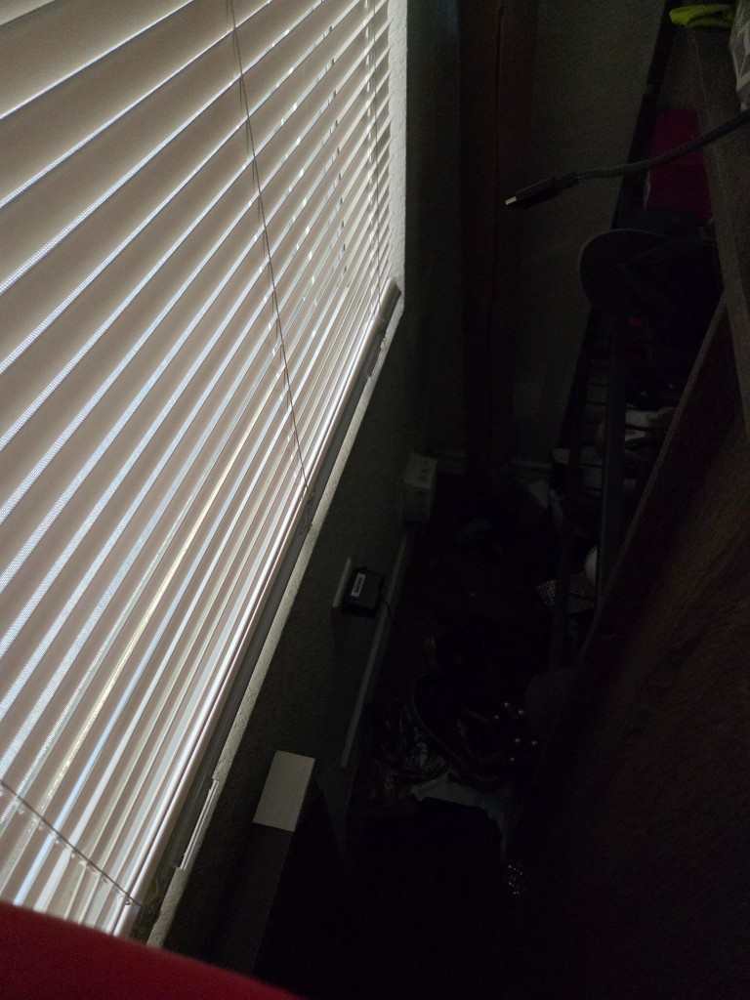

Kids share a room
Emma and KJ keep sleeping together. When you’re away or out late, I already have nights that work with them. The hard part is boundaries and a stretch of messy emotions — not furniture, Wi‑Fi, or a weekend of heavy lifting.
The Separate Rooms Plan
Strawberry Cupcake — I made this for us. An inventory of what it takes if we give each kid their own room.
Honest fork in the road
, neither option is “wrong.” I put this together so we can both see the real shape of Option B — not the Pinterest version.
Emma and KJ keep sleeping together. When you’re away or out late, I already have nights that work with them. The hard part is boundaries and a stretch of messy emotions — not furniture, Wi‑Fi, or a weekend of heavy lifting.
One of them moves into our second bedroom / office space. That means the work setup we’ve got in there — desk, bookshelf, printer, and our home network brain — relocates into our open living room, along that wall we already use for their homework desks. Plus the privacy screen you already bought, safety checks, and a transition week for all of us.
What has to physically move
I walked the house and took these photos. Option B means we rearrange almost all of this.






Tap along if you want,
Roughly 1–2 full days of work for us, then a week of sleep settling. Checking boxes doesn’t commit us — it just makes the mountain feel countable.
Start tapping — watch the bar get honest.
Three friction points from these photos
No pressure — just clarity
If separate rooms are truly what we want, this checklist is the path — and we can do it with eyes open, a weekend, and a little grit.
If the heavier lift is coaching through nighttime emotions so the kids can share a room without you becoming the overnight firefighter… that’s a real option too. I’m already living a version of that when you’re away.
Either way: I’m not trying to “win.” I want us to pick the plan whose cost we actually mean to pay. Love you — let’s talk when you’ve had a minute with this.